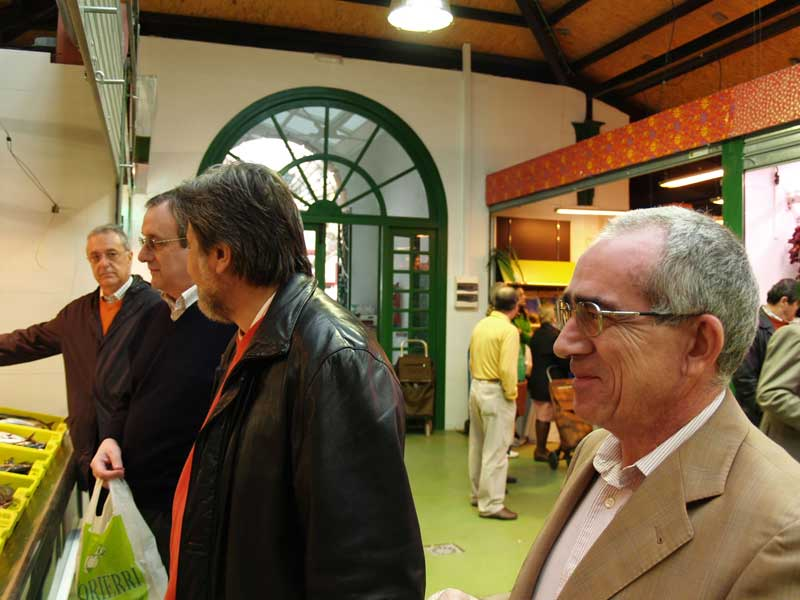

Encuentro en SantoñaAnterior | Inicio | Siguiente |
|
 Los que no salieron en la foto, porque estaban comprando bonito en escabeche o al natural en conserva. Suso aparece en la foto porque había ido a avisarles para la foto de grupo y los pillé a todos. |